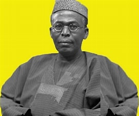
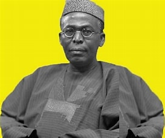

Biography
Chief Obafemi Awolowo (1909-1987) was a Nigerian nationalist, a political leader, a key player in Nigeria's independence movement, the First and Second Republics and the Civil War. Obafemi Awolowo was born today, March 6, 1909 in Ikenné, Western State, Nigeria. He was the first premier of the Western Region and later federal commissioner for finance, and vice chairman of the Federal Executive Council during the Civil War. He was thrice a major contender for his country's highest office. He was the first Leader of Government Business and Minister of Local Government and Finance, and first Premier of the Western Region under Nigeria's parliamentary system, from 1952 to 1959. He believed that the state should channel Nigeria's resources into education and state-led infrastructural development. He then introduced free primary education for all and free health care for children in the Western Region, established the first television service in Africa in 1959, and the Oduduwa Group, all of which were financed from the highly lucrative cocoa industry which was the rock of the regional economy. Awolowo died peacefully at his Ikenne home on 9 May 1987, at the age of 78 and was laid to rest in Ikenne.
His Legacy
Chief Obafemi Awolowo, a beacon of light, he was a source of inspiration to all individuals, a fountain of knowledge, and a reminder of the beauty of humanity.
He was a remarkable politician who walked the sphere of Nigerian politics with compassion, and an achievement spirit. His work and fight for freedom brought sucsess to new Nigeria. His work ensured and enoraged free education for many Nigerians, this is evident in the Nigerians at home and in diapora. Chief Awolowo was a mentor, and he is a gift to all who had the privilege of knowing him. Chief Awolowo had an strong commitment to making the Nigeria united and a better state. He was an advocate for peace and voice to the voiceless. In the face of trials and tribulations, Awolowo was a living testament to the power of resilience. He was a strong and determined leader. Your name has paved ways for many people with the inclusion of Obafemi Awolowo University, Ile-Ife
One of the prominent of legacies of Chief Obafemi Awolowo is Obafemi Awolwo University. His love for education created an avenue and an opportunity for the generations after his demise. O.A.U. has produced great men and women of who have shaped and paved way for the betterment of Nigeria. It is worth noting that O.A.U is recognized beyond the shores of Nigeria due to the effecivenes of Chief Awolowo.
Today, we celebrate a life well lived by an icon and we also carry with us the precious memories. We celebrate a life of legacy he lived. Forever, we carry the love and resilience he portrayed. Keep on resting in peace, Chief Obafemi Awolowo. You will be forever cherished.
Pictures of the Icon
 
